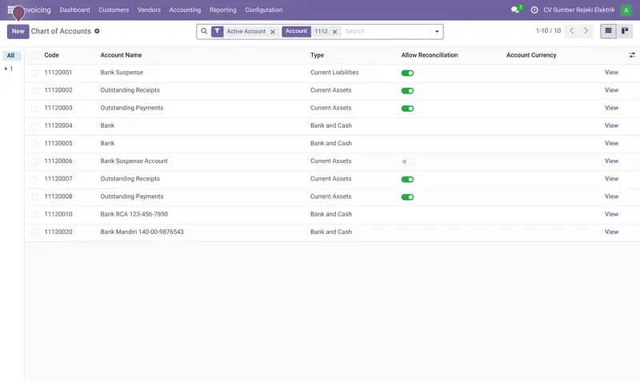
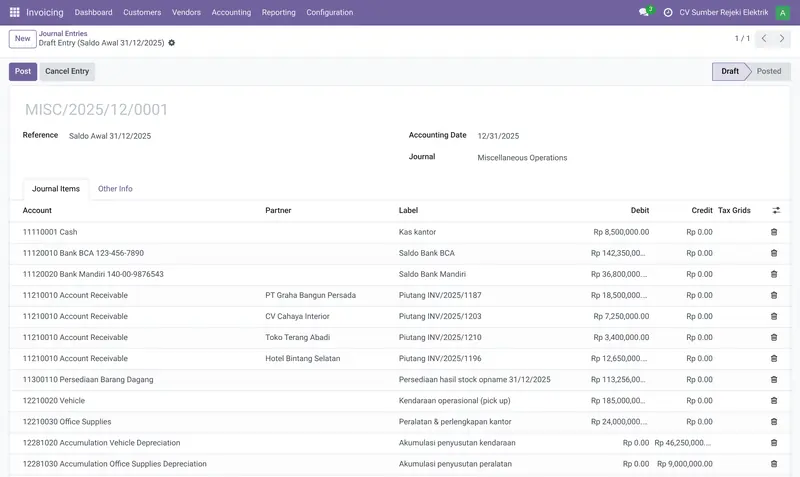
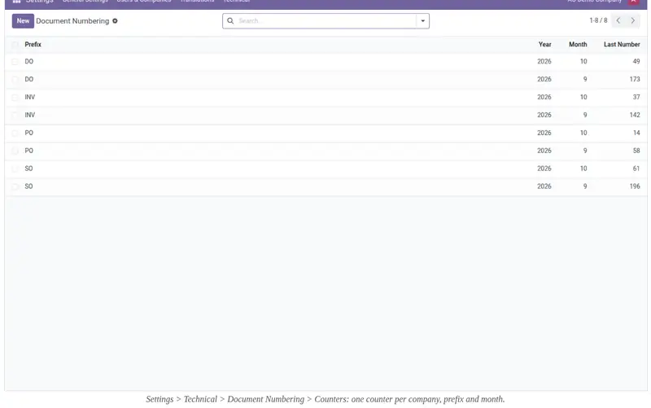
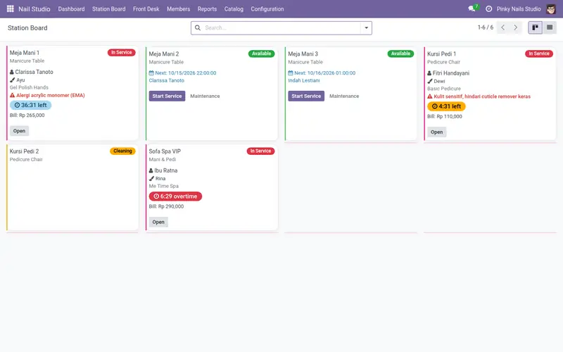
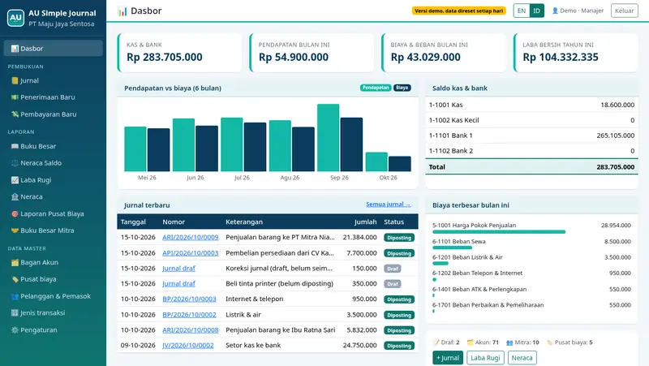

Jasa & Layanan
Implementasi Odoo 18
Setup Odoo 18 dari awal: analisa proses, konfigurasi modul (penjualan, pembelian, stok, akuntansi), migrasi data, training user.
Mulai Rp5.000.000 · harga final sesuai ruang lingkup
Ringkasan
Setup Odoo 18 dari awal: analisa proses, konfigurasi modul (penjualan, pembelian, stok, akuntansi), migrasi data, training user. Semua angka di halaman ini adalah harga mulai; saya kunci harga final di penawaran tertulis setelah scope jelas.
Fitur yang Anda dapat
- Analisa proses bisnis singkat: penjualan, pembelian, stok, dan akuntansi
- Instalasi dan konfigurasi Odoo 18 (Community atau Enterprise)
- Setup perusahaan, bagan akun, pajak, gudang, dan hak akses
- Aktivasi dan penyesuaian modul standar yang memang Anda butuhkan
- Migrasi data dasar: pelanggan, vendor, produk, dan saldo awal
- Training user per peran (admin, sales, gudang, finance)
- Pendampingan go-live dan support ringan 3 bulan
- Modul custom, integrasi, atau laporan khusus bisa ditambah sesuai paket jasa lain
Contoh layar
Klik gambar untuk memperbesar. Layar memakai data demo atau ilustrasi berlabel data dummy — bukan data klien.
 Contoh layar Odoo 18 setelah dikonfigurasi: alur approval (data demo).
Contoh layar Odoo 18 setelah dikonfigurasi: alur approval (data demo).


Bagan akun yang sudah diset (database contoh, nomor rekening bersifat dummy).

Jurnal saldo awal saat migrasi data (database contoh). Mapping file master produk ke field Odoo saat import (file contoh).
Mapping file master produk ke field Odoo saat import (file contoh).


Penomoran dokumen per prefix dan periode (AU Demo Company). Modul stok yang sudah siap dipakai user gudang (data demo).
Modul stok yang sudah siap dipakai user gudang (data demo).


Implementasi bisa ditambah modul industri, misalnya salon (data demo). Setup multi-company bila usaha Anda punya lebih dari satu badan.


Laporan keuangan setelah akuntansi dikonfigurasi (data demo).Paket & harga
Paket UKM
mulai Rp5.000.000Setup, migrasi data dasar, dan training untuk lingkup yang ringkas.
Paket menengah
mulai Rp25.000.000Lebih banyak proses, gudang atau cabang, plus migrasi dan training yang lebih lengkap.
Kedua paket sudah termasuk setup, migrasi dasar, dan training. Harga final sesuai jumlah user, perusahaan, dan kedalaman proses. Lisensi Odoo Enterprise (bila dipakai) dihitung terpisah ke Odoo.
Skema kerja
Pertanyaan singkat
Apakah harga di halaman ini sudah final?
Belum. Angka di situs adalah harga mulai. Harga final saya kirim lewat penawaran tertulis setelah ruang lingkup (scope) disepakati.
Bagaimana cara mulai?
Cukup DM saya di Threads untuk konsultasi gratis. Setelah kebutuhan jelas, saya buatkan ringkasan scope dan penawaran tertulis.
Apa yang termasuk support 3 bulan?
Perbaikan bug dari pekerjaan yang sudah diserahkan, pertanyaan pemakaian, dan penyesuaian kecil. Perubahan lingkup baru dihitung terpisah.
Apakah ada biaya langganan bulanan?
Untuk pengerjaan jasa, tidak ada biaya langganan. Support ringan 3 bulan sudah termasuk. Maintenance tahunan bersifat opsional, sekitar 15–20% per tahun. Untuk aplikasi custom, biaya hosting dihitung terpisah jika Anda ingin saya yang kelola.
Apakah termasuk lisensi Odoo Enterprise?
Tidak. Lisensi Enterprise dibeli langsung dari Odoo. Saya bisa bantu merancang apakah Community sudah cukup, atau Enterprise memang diperlukan.
Mau bahas kebutuhan Anda?
Konsultasi gratis. Cukup DM saya di Threads. Saya balas dengan pertanyaan ringkas, lalu penawaran tertulis bila lingkupnya sudah jelas.
DM @yohanesandy.erp